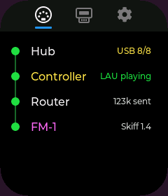
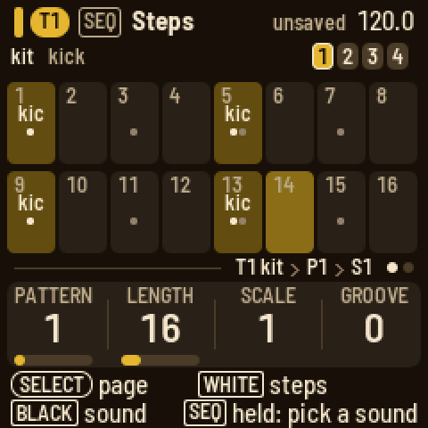
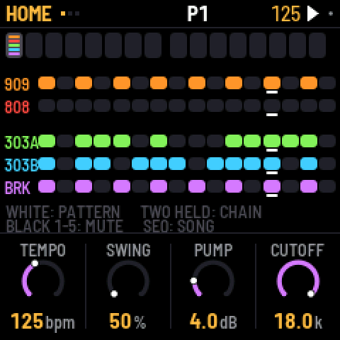
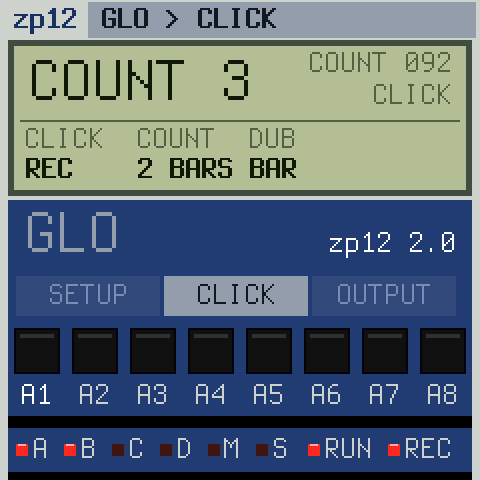
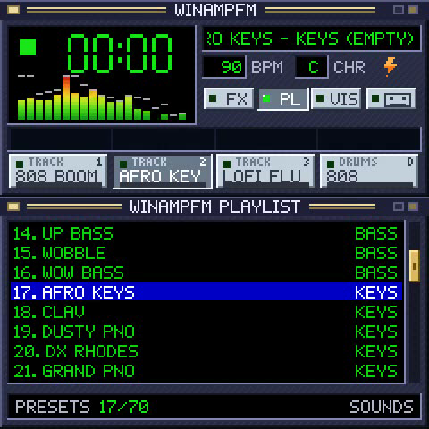
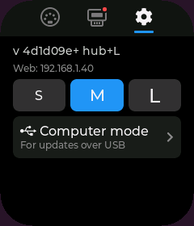
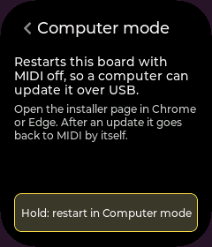

Wi-Fi
Join your network from Outrigger's screen, so updates, downloads and its web page need no cable.
Any MIDI controller in, any firmware on
A palm-sized touchscreen on the hub. It sends your playing to the FM-1, shows you what's connected, and handles every firmware switch, backup first.



Outrigger, the FM-1 and your MIDI controller all plug in here, and one charger powers the lot. The trick is a hub that can charge a laptop through it: Outrigger sits where the laptop would.
M-VAVE's $60 pocket FM synth, with 27 keys, a speaker and a battery. Its players have written more than a hundred alternative firmwares for it, which turn it into a groovebox, a sampler, a drum machine and more.
Any MIDI controller with a USB port that works without installing a driver: keys, pads, knobs, faders. Plug it in and it plays the FM-1.
Has a 5-pin or 3.5 mm MIDI out? A plain MIDI cable into the FM-1 does that part, no Outrigger needed.
Any MIDI controller with a USB connection plays the FM-1: full-size keys, pads and knobs on a pocket synth. No laptop on the table, no MIDI adapters, one charger for everything.
A groovebox tonight, a sampler tomorrow: switch between more than a hundred community firmwares in about a minute, right on Outrigger. It backs up before every switch, so your songs are waiting when you come back.




This runs Outrigger. Most ESP32-S3 boards with a screen should work; we're still testing.
Tried another board? Tell us how it went.
Most hubs that can charge a laptop through them work. Outrigger plugs in where the laptop would.
We suspect any MIDI controller made in the last fifteen years works.
Set up, update and check on Outrigger from your phone or laptop, without plugging it in.
Join your network from Outrigger's screen, so updates, downloads and its web page need no cable.
Open Outrigger from any browser on your Wi-Fi: status, backups and settings.
Browse the Firmware Hub on Outrigger's screen and download straight to Outrigger.
Copy any backup off Outrigger, and restore the one you choose.
Outrigger's page shows what it sees: the devices, its log and any crash. A fix starts with a link, not a guess.
More of your rig on one hub, and a way to capture what you play.
Capture its audio over USB at 44.1 kHz stereo and pull the takes off over Wi-Fi. Streaming comes after.
Route any MIDI controller with a USB connection to any USB synth, not just the FM-1. The router is built; pointing it at other synths is a small change we haven't made or tested yet.
Several controllers together, Bluetooth MIDI, and twice the USB room on ESP32-P4 boards.
Boards with a card slot keep every firmware locally, about 60 MB in all.Pro tip: buying an ESP32 now? Get one with a TF card slot, like the 1.8-inch AMOLED.
Outrigger's USB port is busy running your MIDI gear, so first hand it to your computer: in Settings, open Computer mode and hold the button. Then plug Outrigger into your computer and click Check my ESP32, then Install. It goes back to MIDI by itself afterwards, and your backups stay.


Try another cable: charge-only cables never show up. Or hold BOOT, tap RST, let go of BOOT, and click Check my ESP32 again.
It's almost certainly not dead: its install mode lives in ROM. The Firmware Hub's Rescue or the Unbricker brings it back from a computer.
For now, Outrigger has room for one MIDI controller next to the FM-1. Unplug the other one. More than one is coming.
One anonymous count when you press Install, unless you untick the box beside that button: which board profile, which edition, the installer's version, whether it finished, and the day. No MAC address, chip serial, IP address, browser details or cookies. A finished install counts once per board in each browser. If an install fails, you can send us its log with "Send this log to Outrigger": you see all of it first, and your board's MAC address is taken out. Page visits are counted by Cloudflare Web Analytics, which uses no cookies and doesn't fingerprint visitors.
On Outrigger itself, never online. Copying them to a computer is coming.
For builders
Each ESP32 board gets a profile, so the screens, installer checks and tests adapt to it. Two boards today, the 1.69" and 3.5", with more coming. See the board list.
One shared base with apps on top, built into editions. Today that's Hub or Hub + Loader.A general MIDI hub for any USB synth is planned.
Outrigger's core and apps are open source. Build your own edition with only what you need. Source on GitHub.
Installs with esptool-js 0.7.0 (Apache-2.0), served from this site. It writes only the program and its startup parts, never your settings or the backup store. Outrigger is GPL-3.0 (source); the firmware includes LVGL and EspUsbHost (MIT), Arduino_GFX (BSD) and the Arduino ESP32 core (LGPL-2.1): licenses and credits.